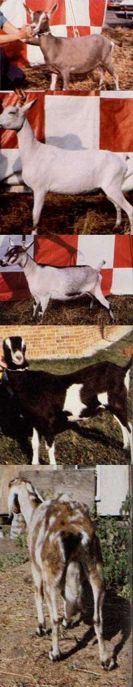

Toggenburgs are a small but hardy breed of milkM producers... All-white Saanens are the ""Holsteins"" of dairy goats... Rugged French Alpines rarely have any kidding problems... ""Earless"" La Manchas have the reputation of being a remarkably docile... This poor-quality ""on-line"" milker has a narrow, pendulous udder and large, unequal teats.